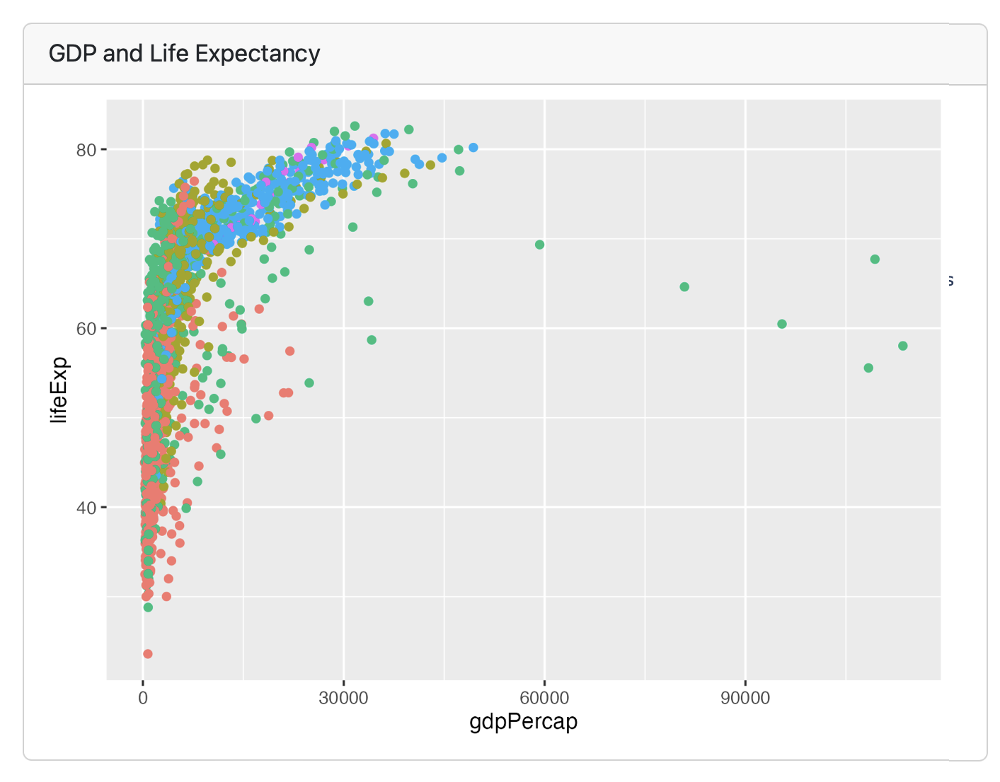

In the Communicate section of the Learning Analytics workflow, the focus is on effectively presenting and sharing the results of your analysis with stakeholders. This involves creating clear and compelling visualizations, writing comprehensive reports, and delivering presentations that highlight key insights and actionable recommendations.
The goal is to ensure that the findings are easily understood and can inform decision-making processes, ultimately leading to improved educational outcomes. Utilizing tools like ggplot2 for visualizations and packages like RMarkdown for report generation can enhance the clarity and impact of your communication.
Each code chunk makes a card, and can take a title
```{r}#| title: GDP and Life Expectancylibrary(gapminder)library(tidyverse)ggplot(gapminder, aes(x = gdpPercap, y = lifeExp, color = continent)) + geom_point()```

Tables
Each code chunk makes a card, doesn’t have to have a title
For interactive exploration, some dashboards can benefit from a live R backend
To do this with Quarto Dashboards, add interactive Shiny components
Deploy with or without a server!
Communicate in the LA workflow
The final(ish) step in our workflow/process is sharing the results of analysis with wider audience. Krumm et al. (2018) have outline the following 3-step process for communicating with education stakeholders what you have learned through analysis:
Select: Communicating what one has learned involves selecting among those analyses that are most important and most useful to an intended audience, as well as selecting a form for displaying that information, such as a graph or table in static or interactive form, i.e.a “data product.”
Polish: After creating initial versions of data products, research teams often spend time refining or polishing them, by adding or editing titles, labels, and notations and by working with colors and shapes to highlight key points.
Narrate: Writing a narrative to accompany the data products involves, at a minimum, pairing a data product with its related research question, describing how best to interpret the data product, and explaining the ways in which the data product helps answer the research question.
Make a Dashboard!
Create a Data Story with our current data set.
Develop a research question
Add ggplot visualizations
Modeling visualizations
Add a short write up for the intended stakeholders